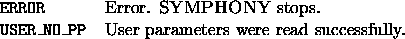

int user_readparams(void *user, char *filename, int argc, char **argv)
The user reads in parameters from the file named filename. The file filename is a file containing both built-in parameters and user parameters. The filename is given as a command line argument when starting the application and is then passed to the user. The user must open the file for reading, scan the file for lines that contain user parameters and then read the parameters in as appropriate. See the file Master/master_io.c to see how SYMPHONY does this.
Optionally, the user can also parse the command line arguments. All capital letters are reserved for user-defined command line switches. The switch -H is reserved for help and calls the user's usage subroutine (see user_send_lp_data()).

